← Back to Projects
10 • Adaptive Reuse + Lofts
Hudson Urban Lofts
A refined urban residential address where warehouse heritage, riverfront living, a lush inner courtyard and contemporary loft interiors converge.
MEMORY BECOMES MARKET VALUE
Design Narrative
The value of the existing fabric lies not in preserving nostalgia, but in turning its memory into a richer way of living.
The project keeps the emotional weight of warehouse heritage while turning it into warm residential value: brick, steel, light, greenery and the river become part of the living product.
Industrial memory, flexible loft living, urban courtyard, river views and adaptive materiality.
62 lofts6 stories18 parking spacesRiver viewsIndustrial memoryUrban courtyard
Strategic Lens — Adaptive Value
How can warehouse heritage become a contemporary residential asset without erasing what made the place distinctive?
Keep industrial memory legible while inserting light, landscape and flexible living.
Brick, steel, generous glazing, river views and a planted inner court turn industrial character into residential warmth.
Industrial shell, warm interiors, green court and river-facing life.
Authenticity becomes market differentiation when the old fabric still shapes the new experience.
Curated Visual Gallery
Hudson Urban Lofts
A visual sequence of architecture, atmosphere, movement and detail.

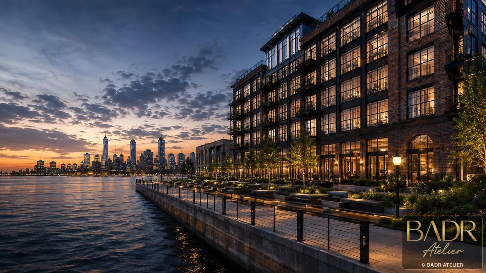
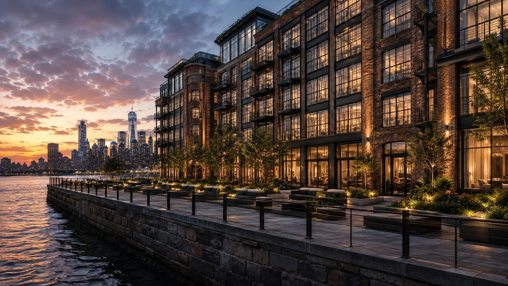
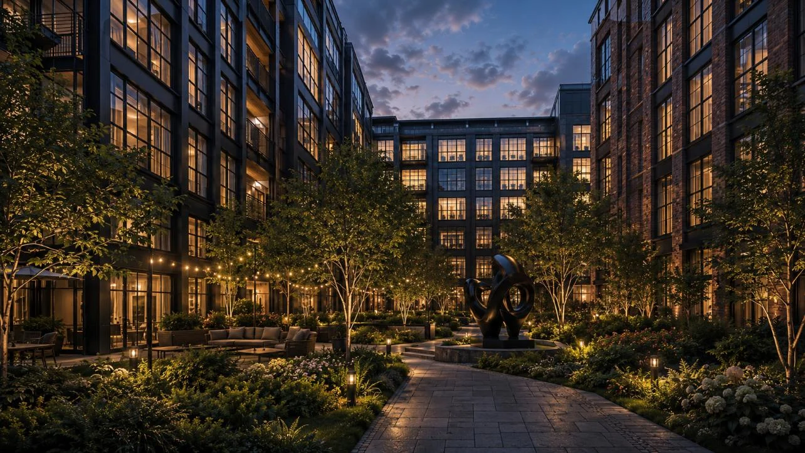
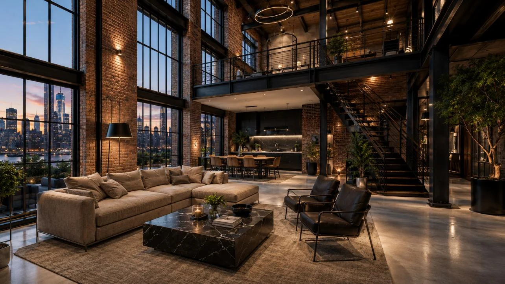
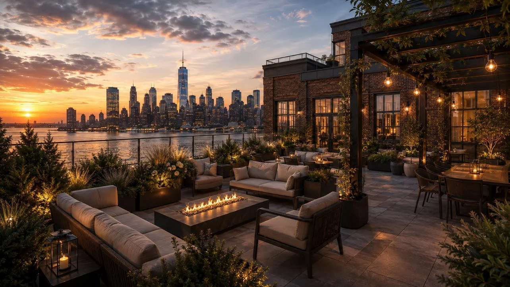
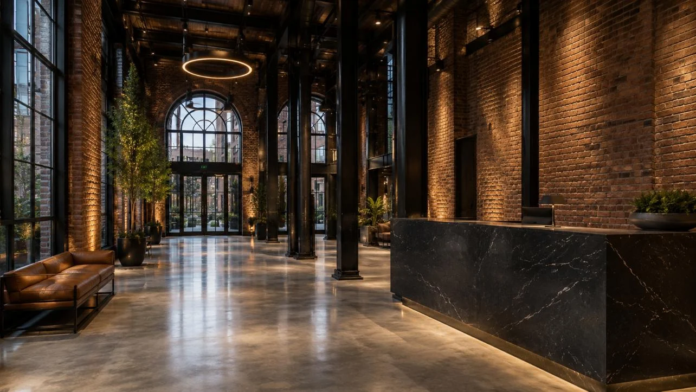
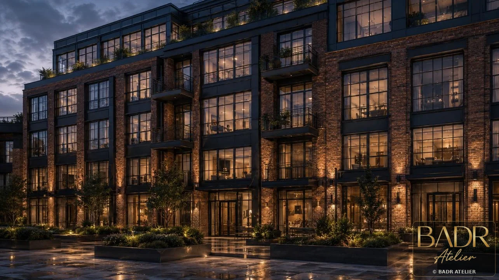
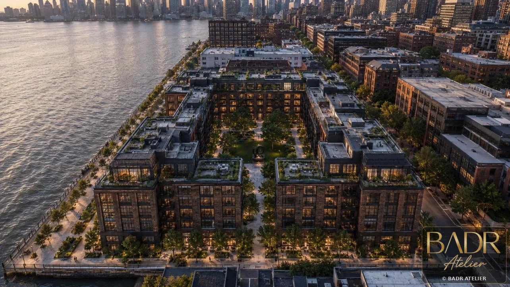
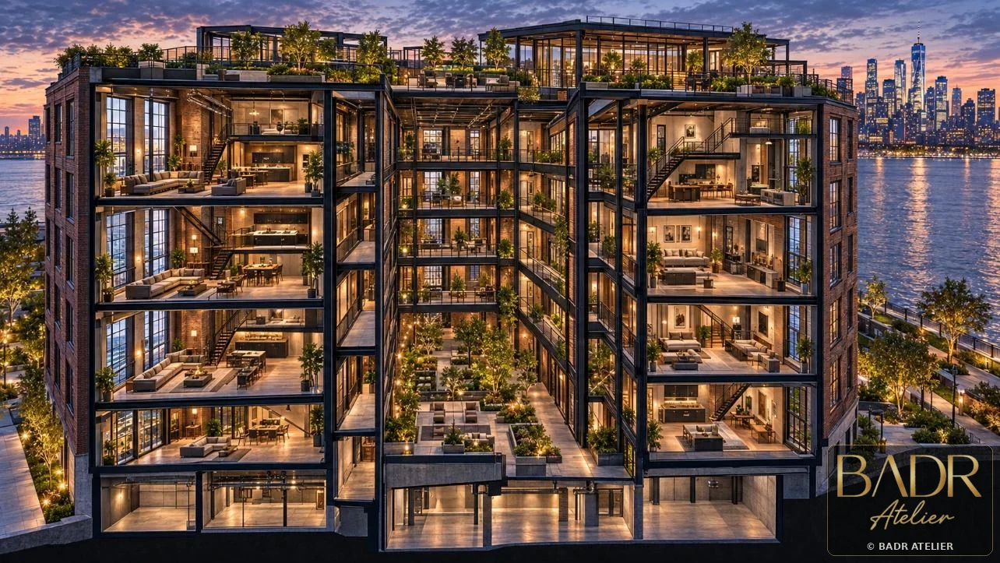
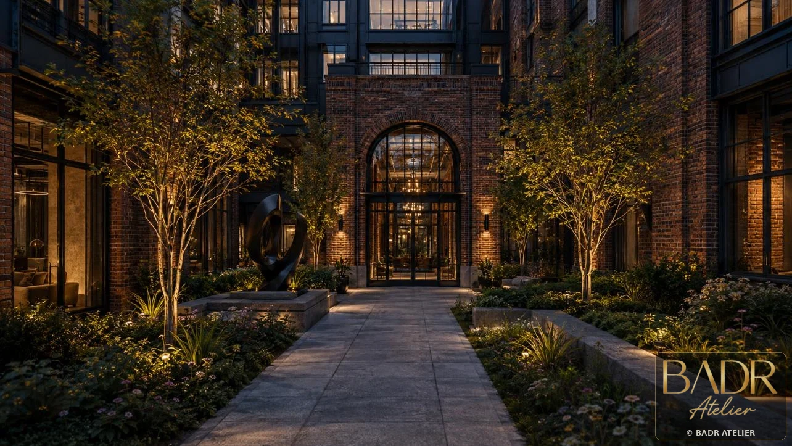
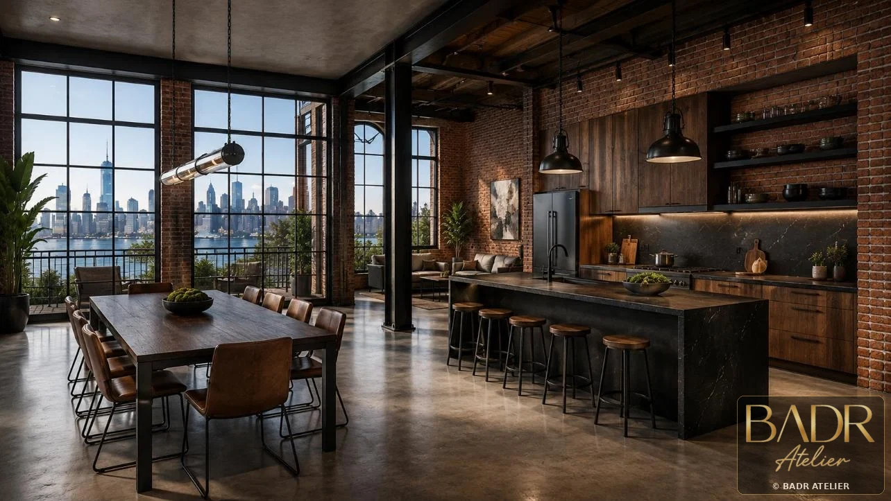
Key Features
- 62 lofts
- 6 stories
- 18 parking spaces
- River views
- Industrial memory
- Urban courtyard
- Flexible loft interiors
Spaces + Experiences
- Riverfront façade
- Loft interiors
- Inner courtyard
- Lobby
- Amenities
- Parking edge